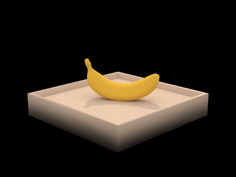
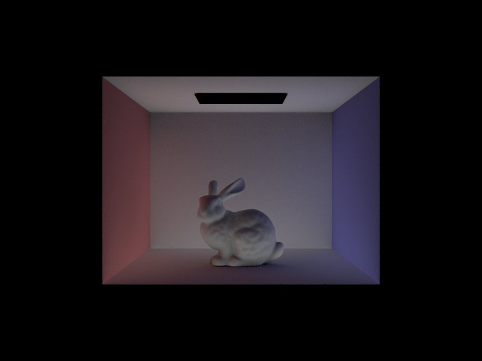
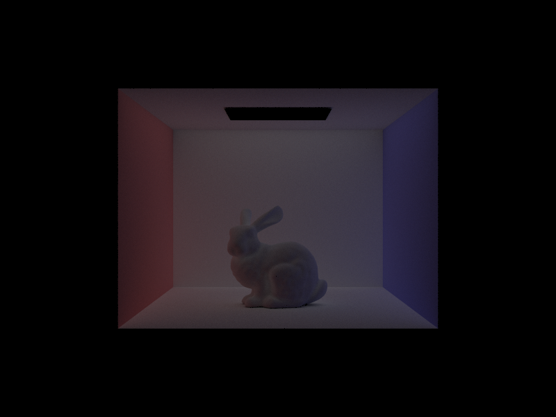

CBbunny.dae with importance sampling (s=16, l=8). |
Ray Generation Process: the generate_ray function in camera.cpp works by
first converting the image point to camera space, then generating a cooresponding ray in world space.
The image point is converted to camera space with the following code.
auto new_x = (x - 0.5) * 2 * tan(hFov * M_PI / 360); auto new_y = (y - 0.5) * 2 * tan(vFov * M_PI / 360); auto point = Vector3D(new_x, new_y, -1);The
new_x, new_y were rescaled to fit in the new range \( [-tan(fov/2), tan(fov/2)] \)
and the z-coord was chosen as -1 since the image plane is defined as being aligned at z = -1.
Finally, the ray endpoint and origin were converted to world space using the c2w transformation matrix, which results in the final generated ray.
Vector3D edge1 = p2 - p1;
Vector3D edge2 = p3 - p1;
auto s1 = cross(r.d, edge2);
auto frac = dot(s1,edge1);
if (frac > -EPS_D && frac < EPS_D) {
return false;
}
This section sets up the variables \( E_1, E_2, S_1 \) and checks that \( S_1 \) is non-zero so the inverse is defined. This code also checks that the ray is not parallel to the triangle plane.
auto inv_det = 1.0 / frac;
auto s = r.o - p1;
double b2 = inv_det * dot(s, s1);
if (b2 < 0 || b2 > 1) {
return false;
}
auto s2 = cross(s, edge1);
double b1 = inv_det * dot(s2,r.d);
if (b1 < 0 || b1 > 1 || b1+b2 > 1) {
return false;
}
double t = inv_det * dot(edge2, s2);
This section calculates the barycentric coordinate values \( b_1, b_2\), and returns the value of \(t\) cooresponding to the intersection point.
isect->n = (1 - b1 - b2) * n1 + b2 * n2 + b1 * n3;Finally, the barycentric points are then used to fine the intersecion plane normal, which is shown above.
auto a = dot(r.d, r.d);
auto b = 2.0 * dot(r.o - this->o, r.d);
auto c = dot(r.o - this->o, r.o - this->o) - this->r2;
if (b * b - 4.0 * a * c < 0) {
return false;
}
t1 = (-b - sqrt(b * b - 4 * a * c)) / (2 * a);
t2 = (-b + sqrt(b * b - 4 * a * c)) / (2 * a);
a,b, and c are calculated using the method on lecture slides, and a preliminary check is done to make sure the value of t being found is real, otherwise the intersection doesn't exist.
Once this is done, both intersection points t1, t2 are found and the smallest is returned as the t parameter cooresponding to the sphere-ray intersection point. The r.max_t
parameter is also set here so that only the closest intersection is considered.
auto normvec = ((r.o + r.d * i->t) - this->o); normvec.normalize();
Normal Shading on Small .dae Files:
CBspheres.dae. |
CBgems.dae. |
BVH Construction Algorithm: we build up the BVH by recursively splitting the primitives based on a heuristic on the dimensions of the bounding centroid box. Its structure is described below:
BVHNode *node = new BVHNode(bbox);
if (num_prim <= max_leaf_size) {
node->start = start;
node->end = end;
}
BVHNode. We describe our heuristic in the next section.BVH Splitting Heuristic: we split the primitives based on the centroid of the centroid bounding box. Specifically, we compare a primitive's centroid with that of the centroid bounding box, along the largest dimension of the centroid bounding box. We provide code implementations below:
BBox bbox, centroid_box;
for (auto p = start; p != end; p++) {
BBox bb = (*p)->get_bbox();
bbox.expand(bb);
centroid_box.expand(bb.centroid());
}
// At this point, centroid_box contains the centroids of all bounding boxes
int axis = maxDimension(centroid_box.extent); // Compute left and right sides std::vectorprims_l; std::vector prims_r; for (auto p = start; p != end; p++) { if ((*p)->get_bbox().centroid()[axis] >= centroid_box.centroid()[axis]) { prims_l.push_back(*p); } else { prims_r.push_back(*p); } } // Compute split pointer auto split = start + prims_l.size(); // Move the objects into positions for (int i = 0; i < num_prim; i++) { if (i < prims_l.size()) { *(start + i) = prims_l[i]; } else { *(start + i) = prims_r[i - prims_l.size()]; } } node->l = construct_bvh(start, split, max_leaf_size); node->r = construct_bvh(split, end, max_leaf_size);
Normal Shading on Large .dae Files:
blob.dae. |
CBlucy.dae. |
dragon.dae. |
With vs. Without BVH Acceleration: we observed substantial speedups on rendering times, displayed in the table below. We found empirical evidence supporting the asymptotic speedup of BVH, as the rendering time seems to go from approximately linear to logarithmic with respect to the number of primitives. An interesting result is that CBlucy.dae took the least time to render, despite it being the most geometrically complex; we believe that this is due to the scene's small triangles, which are rendered quickly via BVH.
|
|
estimate_direct_lighting_hemisphere: Uniform hemisphere sampling works by taking an intersection
point to analyze the lighting of and then taking random samples across a hemisphere in order to determine
its light level. First, after determinining the hit_p of the intersection, a randomly sampled ray is generated at that location,
taking note that it is in object space and needs to be coverted with o2w. EPS_F is set here so the intersecting place is at least some distance away from the ray.
auto samplevec = hemisphereSampler->get_sample(); Ray r_sample = Ray(hit_p, (o2w * samplevec).unit()); r_sample.min_t = EPS_F; //for super close collision purposesAfter this,
r_sample is passed through an intersection test and the intersect point's emmission is then added to the sampler
using the reflection equation in lecture. The value for cosj was derived based on the original idea of how the image plane is represented in world space.
Intersection intersecttest;
if (bvh->intersect(r_sample, &intersecttest)) {
auto cosj = dot(samplevec, Vector3D(0, 0, 1));
auto sample = isect.bsdf->f(w_out, samplevec) * intersecttest.bsdf->get_emission() * cosj;
auto pdf = 1 / (2 * PI);
radianceSampler += sample / pdf;
}
Finally, radianceSampler is normalized over samples taken and returned.
return radianceSampler / num_samples;
CBbunny.dae with uniform hemisphere sampling (s=16, l=8). |
ns_area_light samples from each area source. The algorithm also makes sure to reject "shadow rays" that are on the opposite side of the incoming ray (with respect to the reflection surface).
See below for our code implementation:
for (auto light = scene->lights.begin(); light != scene->lights.end(); light++) {
Vector3D wi;
double distToLight;
double pdf;
Vector3D L;
Vector3D L_total = Vector3D();
int num_samples = 0;
for (int i = 0; i < ns_area_light; i++) {
auto L = (*light)->sample_L(hit_p, &wi, &distToLight, &pdf);
auto cosj = dot(wi, isect.n);
Ray r_sample = Ray(hit_p, wi);
r_sample.min_t = EPS_F;
r_sample.max_t = distToLight - EPS_F;
Intersection next_isect;
if (cosj > 0 && distToLight > 0 && !(bvh->intersect(r_sample, &next_isect))) {
auto sample = isect.bsdf->f(w_out, wi) * L * cosj;
L_total += sample / pdf;
}
num_samples++;
if ((*light)->is_delta_light()) {
break;
}
}
L_out += L_total / num_samples;
}
return L_out;
CBbunny.dae with importance sampling (s=16, l=8). |
CBspheres_lambdarian.dae:
l=1 |
l=4 |
l=16 |
l=64 |
l=1 performs quite well still, due to the use of lighting sampling rather than random sampling.
s=16, l=8). Even though both renders have the same number of samples, the
use of importance sampling allows for the pixel to converge to the true luminance much quicker, and reduces the pixelated variance present. Another
interesting comparision can be seen below.
CBbunny.dae with importance sampling (s=1, l=1). |
In a nut shell, importance sampling "limits" the uniform hemisphere sampling to focus only on rays originating from light sources, which allows it to sample both more efficiently and effectively (i.e. more accurate colors). Furthermore, importance sampling is much more effective at rendering point light sources, as uniform sampling has a very low probability of sampling the exact point source ray.
Global Illumination Implementation: the crux of global lighting in at_least_one_bounce_radiance() is the added support of indirect lighting, in which we accumulate radiance from multiple bounces of light. Our implementation consists of the following steps:
L_out to include direct illumination via one_bounce_radiance().max_ray_depth) is less than or equal to 1, we terminate and return L_out.L_out with a certain termination probability. We chose a reasonable termination probability of 0.4.next_r by sampling a direction from the BSDF via isect.bsdf->sample_f(), with decremented depth r.depth - 1.next_r intersects the bvh, we compute its radiance by recursively calling at_least_one_bounce_radiance on it. Then, we accumulate this indirect (via bouncing) light by scaling it with the current intersection reflectance (from step 4) and the direction of next_r. Finally, we make sure to divide by the BSDF sample pdf and, if applicable, the Russian Roulette continuation probability.Example Renderings with Global Illumination: we provide a couple example images rendered with global (direct and indirect) illumination, using 1024 samples per pixel:
CBbunny.dae |

banana.dae |
Visualizing Direct vs. Indirect Illumination: to visualize the separate contributions of direct and indirect lighting to global illumination, we provide renderings of CBspheres_lambertian.dae with only direct illumination (left) and only indirect illumination (right). Both renders use 1024 samples per pixel, 16 samples per area light, and a max ray depth of 5.

CBspheres_lambertian.dae with only direct lighting. |
CBspheres_lambertian.dae with only indirect lighting. |
Notice that parts of the scene that could only be lit by indirect light bounces (e.g. the ceiling and bottoms of the spheres) are lit up in the indirect rendering.
Rendering Light Bounces: we provide rendered views of CBbunny.dae with max_ray_depth set to 0, 1, 2, 3, 4, and 5, while varying isAccumBounces. Here, we aim to visualize how each successive light bounce behaves and contributes to the global illumination. All renders below use 1024 samples per pixel and 32 samples per area light.
isAccumBounces=false (i.e. individual bounce):
m=0 |
m=1 |

m=2 |
m=2 |

m=3 |
m=4 |
m=5 |
isAccumBounces=true (i.e. accumulates bounces):
m=0 |
m=1 |
m=2 |
m=2 |
m=3 |
m=4 |
m=5 |
Global Illumination with Russian Roulette: we now display renderings of CBbunny.dae using Russian Roulette, with max_ray_depth set to 0, 1, 2, 3, 4, and 5. All renders below use 1024 samples per pixel and 32 samples per area light.
m=0 |
m=1 |
m=2 |
m=2 |
m=3 |
m=4 |
m=5 |
Varying Sample-per-Pixel: we display rendered views of CBdragon.dae with sample-per-pixel rates of 1, 2, 4, 8, 16, 64, and 1024. All renders below use 16 samples per area light, and a max ray depth of 4.

s=1 |

s=2 |

s=4 |

s=8 |

s=16 |

s=64 |

s=1024 |
How does Adaptive Sampling work: Adaptive Sampling works by creating a distribution
based on the sample rays collected so far, and terminates when the sampled result
is most likely correct based on that distribution. In our implementation, being likely correct means being 95% confident that
the sampled illuminance is within \( maxTolerance \cdot \mu \) away. The values \( \mu\) and \( \sigma^2 \)are calculated based on an accumulating total and checked every samplesPerBatch iterations.
Adaptive Sampling Implementation:
double sample_illum = sample_radiance.illum();
s1 += sample_illum;
s2 += sample_illum * sample_illum;
batch_size++;
// adaptive sampling
if (batch_size % samplesPerBatch == 0) {
auto mu = s1 / n;
auto var = (1.0 / (n - 1)) * (s2 - (s1 * s1) / n);
auto I2 = 1.96 * 1.96 * var / n;
auto cutoff2 = maxTolerance * maxTolerance * mu * mu;
if (I2 <= cutoff2) {
break;
}
}
In our implementation, rather than compute I and cutoff directly, we just calcuate the squared versions and compare those to avoid using sqrt.
We also check for termination whenever batch_size % samplesPerBatch == 0 , and calculates the equation presented in the spec.
CBbunny.dae noise free rendered result. |
CBbunny.dae heatmap showing samples taken per pixel. |